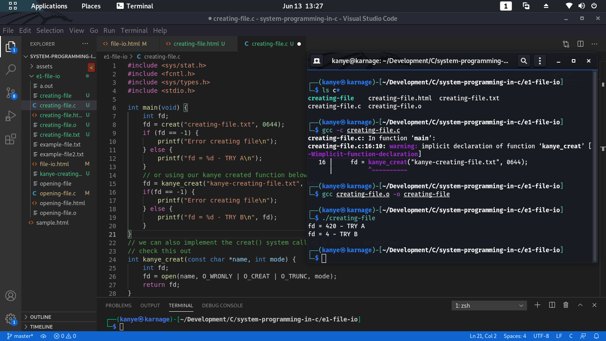

Normally, we could use the flags O_WRONLY O_CREAT & O_TRUNC to create a file. Since it is a basic necessity, there is a system call for it. The creat() system call recieves two arguments: name & mode. The name specifies the file we want to create, the mode determines its permissions. Let us look at the code below

Refer to e1-file-io/creating-file.c to see the code